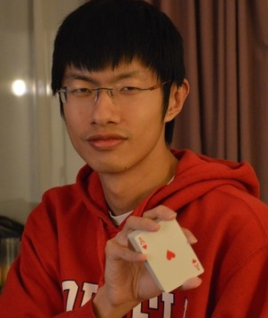
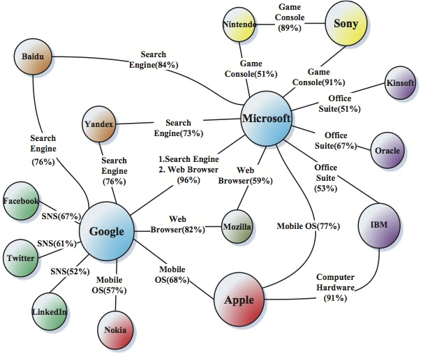

Yang Yang 杨洋
Ph.D. Candidate, Tsinghua University
Email: SherlockBourne {at} gmail [dot] com
Office: Room 1-308, FIT Building, Tsinghua University, Beijing, 100084. China PR.
I am a Ph.D. candidate in Department of Computer Science and Technology at Tsinghua University. I am very fortunate to be advised by Jie Tang and Juanzi Li. I obtained my bachelor degree in Software Engineering from Wuhan University in 2011.
My research interests include studying information diffusion, inferring social ties, and modeling user profiles in large-scaled social networks. Broadly speaking, I am interested in social network analysis and machine learning methodologies.
During my Ph.D. career, I have been visiting Cornell University (working with John Hopcroft) in 2012, and University of Leuven (working with Marie-Francine Moens and Walter Luyten) in 2013.
For more detailed personal information, please refer to my CV.

Information diffusion, which studies how information is propagated in social networks, has attracted considerable research effort recently. However, most existing approaches do not distinguish between different social roles that nodes may play in the diffusion process.
In this paper, we study the interplay between users’ social roles and their influence on information diffusion. In particular, we propose a generative model that integrates social role extraction and diffusion modeling into a unified framework. We then present a Gibbssampling based learning method to estimate the unknown parameters of the proposed model based on historical diffusion data. The proposed model can be applied in several scenarios. For instance, at the micro-level, the proposed model can be used to predict whether a user will repost a given message; while at the macro-level, it is able to predict both the scale and the duration of a diffusion process. We evaluate the proposed model on a real social media data set. Compared with several alternative methods, our model shows better performance in both micro- and macro-level prediction tasks.
Paper: roleaware.pdf | Data:
roleaware.pdf | Data:  Details
Details

Mining emotions hidden in images has attracted significant interest, in particular with the rapid development of social networks. The emotional impact is very important for understanding the intrinsic meanings of images. To understand the emotional impact from images, one interesting question is: How does social effect correlate with the emotion expressed in an image? Specifically, can we leverage friends interactions (e.g., discussions) related to an image to help discover the emotions? In this paper, we formally formalize the problem and propose a novel emotion learning method by jointly modeling images posted by social users and comments added by friends. One advantage of the model is that it can distinguish those comments that are closely related to the emotion expression for an image from other irrelevant ones. Experiments on an open Flickr dataset show that the proposed model can significantly improve (+37.4% by F1) the accuracy for inferring emotions from images. More interestingly, we found that half of the improvements are due to interactions between 1% of the closest friends.
Paper:emotion.pdf | Code: EmotionLearn.zip

Detecting and monitoring competitors is fundamental to a company to stay ahead in the global market. Existing studies mainly focus on mining competitive relationships within a single data source, while competing information is usually distributed in multiple networks. How to discover the underlying patterns and utilize the heterogeneous knowledge to avoid biased aspects in this issue is a challenging problem.
In this paper, we study the problem of mining competitive relationships by learning across heterogeneous networks. We use Twitter and patent records as our data sources and statistically study the patterns behind the competitive relationships. We find that the two networks exhibit different but complementary patterns of competitions. Our proposed model, Topical Factor Graph Model (TFGM), defines a latent topic layer to bridge the two networks and learns a semi-supervised learning model to classify the relationships between entities (e.g., companies or products).
We test the proposed model on two real data sets and the experimental results validate the effectiveness of our model, with an average of +46% improvement over alternative methods.
Paper:competitive.pdf | Code: TopicFGM.zip
Yang Yang, Jie Tang, Yuxiao Dong, Qiaozhu Mei, Reid A. Johnson, and Nitesh V. Chawla.
Modeling the Interplay Between Individual Behavior and Network Distributions.
(Preprint).
[PDF]
Yang Yang, Jia Jia, Boya Wu, and Jie Tang.
Social Role-Aware Emotion Contagion in Image Social Networks.
In Proceedings of the 30th AAAI Conference on Artificial Intelligence
(AAAI'16).
[PDF] (draft)
Yang Yang, Yizhou Sun, Jie Tang, Bo Ma, and Juanzi Li.
Entity Matching across Heterogeneous Sources.
In Proceedings of the 21st ACM SIGKDD International Conference on Knowledge Discovery and Data Mining
(KDD'15).
[PDF]
[Data&Code]
Yang Yang, Jie Tang, Cane Wing-Ki Leung, Yizhou Sun, Qicong Chen, Juanzi Li, and Qiang Yang.
RAIN: Social Role-Aware Information Diffusion.
In Proceedings of the 29th AAAI Conference on Artificial Intelligence
(AAAI'15).
[PDF]
[Data&Code]
Yang Yang and Jie Tang.
Beyond Query: Interactive User Intention Understanding.
In Proceedings of the 2015 IEEE International Conference on Data Mining
(ICDM'15).
[PDF]
Boya Wu, Jia Jia, Yang Yang, Peijun Zhao, and Jie Tang.
Understanding the Emotions Behind Social Images: Inferring with User Demographics.
In Proceedings of 2015 IEEE International Conference on Multimedia and Expo
(ICME'15).
Yang Yang, Jia Jia, Shumei Zhang, Boya Wu, Qicong Chen, Juanzi Li, Chunxiao Xing, and Jie Tang.
How Do Your Friends on Social Media Disclose Your Emotions?
In Proceedings of the 28th AAAI Conference on Artificial Intelligence
(AAAI'14).
[PDF]
[Data&Code]
Yang Yang, Walter Luyten, Lu Liu, Marie-Francine Moens, Jie Tang, and Juanzi Li.
Forecasting Potential Diabetes Complications.
In Proceedings of the 28th AAAI Conference on Artificial Intelligence
(AAAI'14).
[PDF]
[Data&Code]
Yuxiao Dong, Yang Yang, Jie Tang, Yang Yang, and Nitesh V. Chawla.
Inferring User Demographics and Social Strategies in Mobile Social Networks.
In Proceedings of the Twentyth ACM SIGKDD International Conference on Knowledge Discovery and Data Mining
(KDD'14).
[PDF]
[Data&Code]
Yang Yang, Jianfei Wang, Yutao Zhang, Wei Chen, Jing Zhang, Honglei Zhuang, Zhilin Yang, Bo Ma, Zhanpeng Fang, Sen Wu, Xiaoxiao Li, Debing Liu, and Jie Tang.
SAE: Social Analytic Engine for Dynamic Networks.
In Proceedings of the Ninteenth ACM SIGKDD International Conference on Knowledge Discovery and Data Mining
(KDD'13, demo paper). pp. 1502-1505.
[PDF]
[Poster]
Yang Yang, Jie Tang, Jacklyne Keomany, Yanting Zhao, Ying Ding, Juanzi Li, and Liangwei Wang.
Mining Competitive Relationships by Learning across Heterogeneous Networks.
In Proceedings of the Twenty-First Conference on
Information and Knowledge Management
(CIKM'12). pp. 1432-1441.
[PDF]
Jie Tang, Bo Wang, Yang Yang, Po Hu, Yanting Zhao, Xinyu Yan, Bo Gao, Minlie Huang, Peng Xu, Weichang Li, and Adam K. Usadi.
PatentMiner: Topic-driven Patent Analysis and Mining.
In Proceedings of the Eighteenth ACM SIGKDD International Conference on Knowledge Discovery and Data Mining
(KDD'12). pp. 1366-1374.
[PDF]
[Slides]
[Poster]
[System]
[Video]
Tieyun Qian, Yang Yang , Shuo Wang. Refining Graph Partitioning for Social Network Clustering. In Proceeding of the Eleventh International Conference on Web Information System Engineering (WISE'10). pp. 77-90.
[PDF]
2015, awarded National Scholarship
2014, awarded National Scholarship
2013, awarded Alumnus Scholarship of Tsinghua University
2011, awarded best graduation thesis of Wuhan University
2009, ACM International Collegiate Programming Contest, Asia Regional, 2 gold medals
2009, Champion of Citi Financial IT Application Competition
2009, awarded “Ten Outstanding Young People of Wuhan University”
2009, awarded “Ten Great Students of Luo-jia Mountain”
2008, ACM International Collegiate Programming Contest, Asia Regional, 3 gold medals
When not doing research, I clear my mind by playing Magic The Gathering (a world-wide trading card game). I won a Pro Tour Qualifier Tournament in 2014.